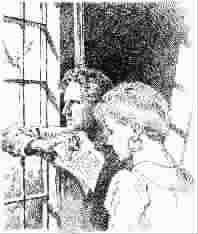

斯盖尔的老屋
●〔美〕高 剑
第一次走进这幢房子时，里面已经空了，除了起居室里留下一把藤椅和几条旧窗帘。这是一幢殖民时代式样的老屋，有上下两层。据经纪人介绍，房主刚刚过世，另外——也是巧合，这房主和我重名。也就是说，我叫斯盖尔，这房主也叫斯盖尔。
不管怎么说，我们关心的还是房子的价格、地税什么的。那天，我们看完了每个房间，又来到楼下的起居室。T娜坐在那把藤椅里，顺便又问了几个实际的问题：“附近有购物中心吗？”
“当然，”经纪人说，“超级市场距这儿两英里，附近有两家银行……”
“——寄信呢？对不起，我是说邮局。”我冷不丁地想起一些事来，像我这种好写信的人，是免不了要往邮局跑的。
“邮局？开车两分钟……”
我走近窗前，后院不远是一个池塘，它的对岸是些未经开发的次生林。这时，有几只鸿雁在远处的池塘里戏水，不时发出嘈杂的叫声。
我决定买下这幢房子。
早晨，我在依稀的鸟叫声中醒来。周围还堆放着没开封的家具，柔和的光线在陈旧的壁纸上缓缓移动……
我和T娜从一张临时的折叠床上起来，打开一楼的前门，我们开始了散步。外面的光线不错，吸引T娜的倒是房前的花圃：这里有郁金香、杜鹃、芍药，还有凤仙花。房后有一片伸向池塘的绿地。我们呼吸着清新的空气，顺着微微倾斜的绿地往池塘走去。“你看，那是什么？”T娜好奇地指着不远处的几棵雪松。那是几个引鸟窝，像猎人的小木屋悬挂在树杈上，低处有几个式样各异的饲鸟器。右边，往前不远，是几棵果树，花刚谢，可见青嫩的幼果。
不一会儿，我们就来到了池塘附近。这里有一条小木船，油漆已剥落，船底布满青苔。远处——在雾气朦胧的水面上，几十只鸿雁正安然地浮动在对岸树林大片的阴影里。那片林子正渐渐地在晨光中苏醒。
种种迹象表明，这里要做的事情很多：花圃需要管理，草地需要修整，饲鸟器要按时去添食，果树也要施肥剪枝。
几周之后，这幢老屋就有了很大的改观。不过，收拾东西时，偶然还会从犄角旮旯里找出些原房主的东西来。而只要发现点什么，T娜便会叫着“斯盖尔——斯盖尔——”就像是发现了墓地里的什么。这不，T娜又在大惊小怪了。
我从卫生间里跑出来时，T娜蹑手蹑脚地从储藏室里探出头，眯着眼睛笑了，原来她发现了一些老邮票。“你看，在木架上找到的。”她把一本集邮册连同一个小纸箱放在新铺的地毯上，从一个小铁盒里取出了几张照片。
她盯着一张照片说：“这屋子原来是这么布置的……”
照片上是一对中年男女，坐在壁炉旁边的一只沙发里。地毯上卧着一只黄色的长毛狗，后面是一棵点缀着彩饰的圣诞树……显然这就是与我同名的斯盖尔先生。看来他的腿不大好——他的旁边有一把木制的拐杖。
在另一张黑白照片上，有三个年轻的骑手。照片已发黄了，但不难看出，牵了一匹白马站在右边的年轻人，就是斯盖尔先生。
“原来他是一名骑手，”T娜说，“年轻时还很帅呢。”
“显然，他的腿疾与骑马这行当有关。”
如果试想着过去的房主在这里的生活，我便能感受到一种陌生、独特的气息。在这夕阳的余晖里，眼前似乎呈现出了这样的情景：斯盖尔独自坐在那把藤椅里——从早晨到黄昏。当他离开那把藤椅时，狗便从地毯上爬起来，抖抖身上的毛……他手里拄着那根木制的拐杖，在走到后院的一个落地的玻璃门时，他停了下来，望着门外，然后拉开门，顺着绿地一步步地向池塘走去。狗跟在他的后面，摇晃着尾巴……
“好神气！”T娜在看另一张照片，“你看，这个人还有过风光的日子呢。”这像是一张领奖的新闻照，场面热烈。
这些照片，使我们可以这样来介绍原来的房主：他年轻时曾是一名骑手，大概在一次赛马中腿部受了伤，从此退出了马背生涯，晚年过着安然恬静的生活。另外，盒子里还有一些书信，其中有两封是被邮局退回来的，信还封着……“斯盖尔，”T娜瞥了我一眼说，“我真不希望咱们家里老出现别人的东西。”
好在斯盖尔的东西在我们家出现得越来越少了，后来见过的有：几把修剪果树用的剪刀、一台打字机、一个渔具箱、一副滑雪板、九只烟斗锅，另外，还有几本驯马用的书——就这些。
买了这房子，我每天要做的另一件事就是分拣邮件。因为写着斯盖尔名字的邮件，竟然有半数都不是寄给我的，而是寄给老房主斯盖尔的。一模一样的名字，很难分出是寄给谁的。其实，一个人去了，许多事并没结束。为了避免差错，我还采取了边分拣边默念的办法，听听我忙碌时的心声吧：
“斯盖尔他的(香水广告)；斯盖尔我的(银行报告)；斯盖尔他的(投资理财)；斯盖尔我的……”有时干脆念“活人收，死人收……”不是我不够耐心，而是不得不讲究点效率。
另外，困扰我的还有如何确保他人隐私的问题。事实上有些信无所谓是谁的，而有的信，却永远是个谜。所以，凡是有我名字的信，我不得不仔细地看，用心地读——像这封信。
亲爱的斯盖尔先生：
你好！久无音讯，十分想念。很抱歉，这么久没有联系。这叫我不得不从去年冬天说起，由于我太太在感恩节前过世，那些日子我一直沉浸在悲痛之中。不久我搬进了老人公寓，而那次搬动，使我遗失了最重要的东西——你的电话和地址。
现在一切都过去了，日子也变得异常平静。每当我想起过去的时光，就不能不想起你……
“不是你的！”读到这里，T娜用她的胳膊肘碰碰我说。
我看了看签名——“你永远的朋友：杰瑞。”
从杰瑞的信中看，他和斯盖尔的交情很深，信里还说斯盖尔是世上唯一一位了解他的人了。
杰瑞？这使我想起了T娜发现的那两封被邮局退回来的信，收信人好像就叫杰瑞。我马上去了车库，在垃圾箱里找回了那两封信。果然，收信人是叫杰瑞。这件事使我们有些闷闷不乐，特别是T娜，她是个有同情心的女人。而时隔不久，我又拆开了一封杰瑞的来信。从信上看，杰瑞似乎已经预感到什么，字里行间都能感受到一位老人的孤独。我想，或许此刻他正坐在老人公寓的窗前等着一位老友的回音。
起先，我们想给这位老人写封信，告诉他斯盖尔已不在人世。可想一想还是没那样做，本质上我们也是报喜不报忧的人。
“哎——斯盖尔，”T娜灵机一动，“不能把斯盖尔这两封信寄给杰瑞吗？无疑这也是斯盖尔先生的遗愿呀。”
“对呀！——信呢？”
随后T娜取来了那两封信。我们考虑了一下，就按邮戳上的时间顺序，寄了一封，留下了一封。
没过多久，杰瑞就回信了：
……我真高兴，终于收到了你的来信。从日期上看，这是你二月十三号写的。真抱歉，由于那时我已经搬离了旧居，使这封信走了如此之久。读了老朋友的来信，我感到莫大的欣慰，除了你，事实上也真想不起还有谁能像你我这样遥相呼应了。现在我唯一担心的是你的健康情况，不知你手术后的化疗效果如何，盼望得知你近来的消息。请记住我的新电话号码吧，也请告知你的……
看了杰瑞的信，唯一能想到的就是剩下的另一封信，虽然信里的内容我们一无所知，但斯盖尔的这封信，显然是不能给杰瑞一个合理的回音。考虑了一下，我把信装进了一个大一点的信封里，并在一张雪白的纸上打了两行黑色的字：
杰瑞先生：
你好！两封斯盖尔的信本该一起寄给您。请您原谅，它们被退回来的时间已经很久了。祝您健康愉快。信是寄出去了，一段时间里，T娜自觉不自觉地会去留意草地边上的那个白色的信箱——杰瑞没再来信。我们觉得这样就好，不然的话……可就在这件事快被忘记的时候，杰瑞又来信了。尊敬的斯盖尔先生：您好！非常感谢您转来的斯盖尔先生的两封书信。收到第二封信时，我已经明白了——这世上我最后的朋友斯盖尔已不在人世。然而，能得知他临终前的详情我已感到欣慰。同时，我似乎能感受到，两次收到斯盖尔的来信所带给我的喜悦是出自于您善意的用心。对我来说，这两封信十分珍贵：或许，在我这样一个老人的内心至少没有比它们更重要的东西吧。现在，我可以告诉我的老朋友——九泉之下的斯盖尔先生：放心吧，信，收到了。
无疑，您是一位有心人。但我不能不向您冒昧地提一个问题：为什么您也叫斯盖尔呢——请原谅，因为我并不知道、也从未听说斯盖尔有过一个同名的朋友或亲人……
我马上给杰瑞回了一封信，告诉他我是叫斯盖尔，但仅仅是这房子的新主人。
后来杰瑞不但给我回了信，我们还通了电话。这样我无形中对老房主斯盖尔又有了更多的了解。原来，杰瑞和斯盖尔是两位老兵——两位参加过韩战的士兵。此外，我还了解到一点有关他们人生的细节，其中也包括斯盖尔腿部伤残的原因——一处战争留下的创伤，与骑马毫不相干。在一次电话中杰瑞说：
“战争是残酷的。那年冬天，许多人都没有回来，斯盖尔也差一点死去。那是韩战的第二年，斯盖尔负了重伤，他的胸部和腿部都被弹片击中了……”杰瑞的记忆力很好，他对细节的叙述，并不像七十岁的人。只是在他述说时常会停顿下来，仿佛浓缩的时光被一点点地舒展开来。他说斯盖尔能活下来是个奇迹。他回忆着当时斯盖尔躺在担架上，大家抬着他通过一个山谷时的情景：“没有人认为处在昏迷中的斯盖尔还能活着。大家只是不想撇下他，希望把这个年轻人从哪里来的再抬回到哪里去……”
我知道，对于一位老人，只要你有诚意，他就会把一生的经历讲给你听。
事实上我与杰瑞的交往也很短暂，第二年春天，我收到了老人公寓的一封来信：
杰瑞因心脏病于三月十二号晚间去世。
他们在杰瑞的私人遗物中只发现了一个人的通讯地址——斯盖尔的地址，也就是我的地址。
从那以后，老房主的邮件消失了。这幢房子经过精心装修，也焕然一新。不过生活还是忙忙碌碌的，今天做完的事，第二天又得再做一遍。
可无论多忙，每天我都会在清晨上班之前到池塘去。在这段时光里，我习惯带着鸟食——一个散发着谷类芳香的袋子，走进青草和露水混合的空气里。那时，池塘上浮动着乳液般的晨雾，沉静之中，只有鸟儿婉转的叫声从林子的深处传来。我给那些饲鸟器里一个个添满鸟食，然后再顺着绿地往回走。这时，我总会在池塘的附近停留片刻，为的是从那个角度看看我们的房子：这幢有着棕色屋顶灰色墙体的老屋，此刻正端坐在橡木高大的树冠中，而玫瑰般的朝霞正在它陡峭的屋脊上流动着……那个斯盖尔也常会在这里观看这房子吗？从这个角度看，这房子显得很高，甚至很远。
我们在W镇一住就是许多年，日子就像池水一般平静。我们生养有几个孩子，幸福的生活让人感受不到时光的流逝。当孩子们在这里一个个长大成人各奔东西以后，房子又变得空空荡荡，以至有些房间成年累月地关闭着。如果不小心偶然推开一间房门，就像打开了一扇唤起往事的闸门：那里有孩子们做过的手工、小布熊、玩旧的布娃娃、老相片和写满了祝福的圣诞卡。或许这也是我们从不轻易地去打开这些房门的原因吧。
另外，体力方面也不比从前。有时从池塘回来，我会感到腰腿酸疼。但我仍然习惯坐在那把藤椅中，手里攥着那个空了的盛鸟食的袋子，在渐渐升起的晨光中闭上眼睛，任鸟儿的叫声从窗外忽远忽近地传来……
“有个小房子也许会省点心。”有时T娜这样说。听到她说话，我才感到她在旁边。她总是在某处孜孜不倦地做着家务：把修剪下来的湿漉漉的鲜花晾成干花，或者用手折叠抚展那些烘干松软的衣服——哦，见鬼，在这千百次的重复中，一双美丽而清秀的手变成了昨日的回忆。
有一天，我们终于想到了离开。
记得，有首歌儿流传甚广，歌词大意是：
房子卖了气候已经转凉，
池塘对岸的那片林子也渐渐地由绿变黄。
告别老屋，
我们去往一个陌生的地方……
为了赶路，离开W镇是个清晨。当我们转身最后看看这幢伴我们度过了那些幸福时光的老屋时，远处已是深秋的景色：鸿雁从水面上一群群升起，这幢棕顶灰墙的老屋被环抱在满坡的红叶里……
(卢惠摘自《延安文学》2006年第4期，本刊有删节，孙愚图)